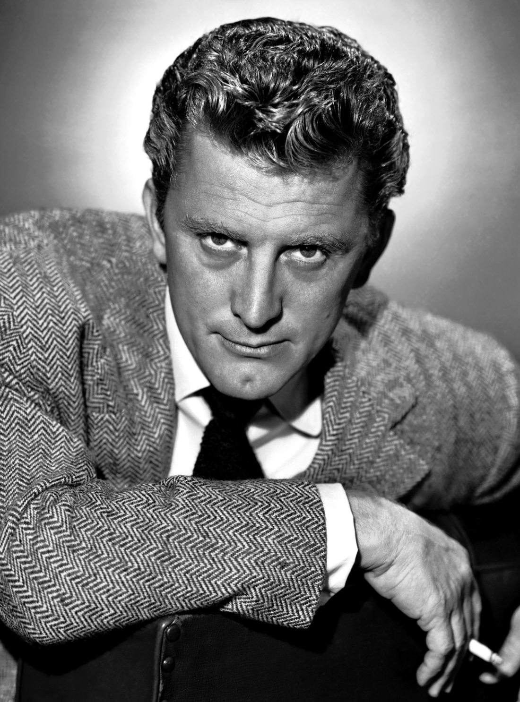

 Issur Danielovitch Demsky, conocido profesionalmente como Kirk Douglas (Amsterdam, Nueva York, 9 de diciembre de 1916–Beverly Hills, California, 5 de febrero de 2020),1 fue un actor y productor de cine estadounidense. Entre sus papeles, destacaron su interpretación del pintor Vincent van Gogh en Lust for Life (1956), y su papel protagonista en Espartaco (1960). Por su extensa y reconocida carrera, recibió un Premio Óscar honorífico en 1996. Es padre del actor Michael Douglas. Fue el penúltimo intérprete más longevo del cine clásico de Hollywood, tras la actriz Olivia de Havilland (fallecida 5 meses después que él), al superar ambos los 103 años de edad.